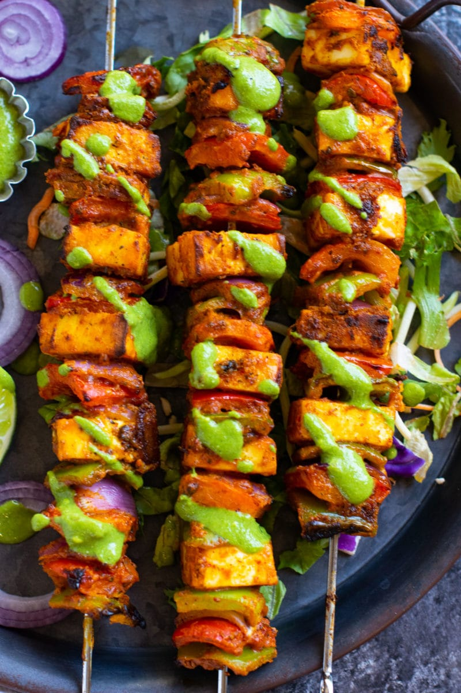

STARTERS

- Royal Paneer Tikka - Chargrilled paneer with saffron glaze
- Mughlai Seekh Kebab - Soft minced kebabs with royal spices
- Truffle Cheese Dumplings - Creamy filling with herb drizzle
- Tandoori Prawns - Grilled with golden butter & garlic
- Emperor's Salad - Crunchy greens, nuts & honey mustard
- Zafrani Paneer Roll - Paneer rolls glazed with saffron cream
- Dilli Darbaar Chaat - Tangy royal chaat with pomegranate pearls